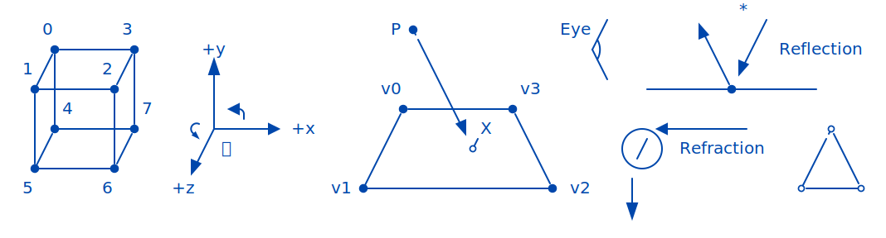

Gabriel Nützi, gabriel.nuetzi@sdsc.ethz.ch
August 8, 2024
Reveal.js based presentations are
cool:
pandoc first tooling approach which gives you
lots of powers.Note: These are speaker notes.
int a = 3;
void foo(int a){
std::cout << "Hello. click!" << std::endl;
std::vector<int> v{1,2,4};
}asdNormal:
void foo(int a) {
std::cout << "Hello. click!" << std::endl;
std::vector<int>; v{1,2,4};
}Editable:
int a = 3;
void foo(int a) {
std::cout << "Hello. click!" << 1 != 3 std::endl;
std::vector<int>; v{1,2,4};
}int a = 3;
int a;
enum class C {A, B, C} b;
std::vector<int> c; // asd
int const * & const d;
using FuncPointer = int (*)(float); // Type: Pointer to function.
using FuncReferenz = int (&)(float); // Type: Reference to function.
using Func = int(float); // Type: Function.
Customized with ❤️ by Gabriel Nützi for SDSC.